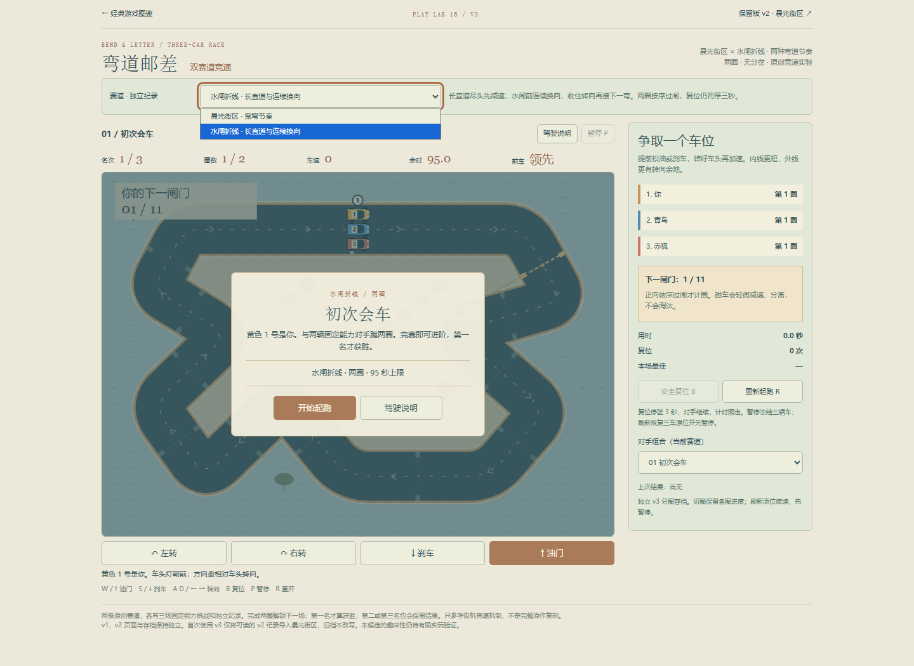
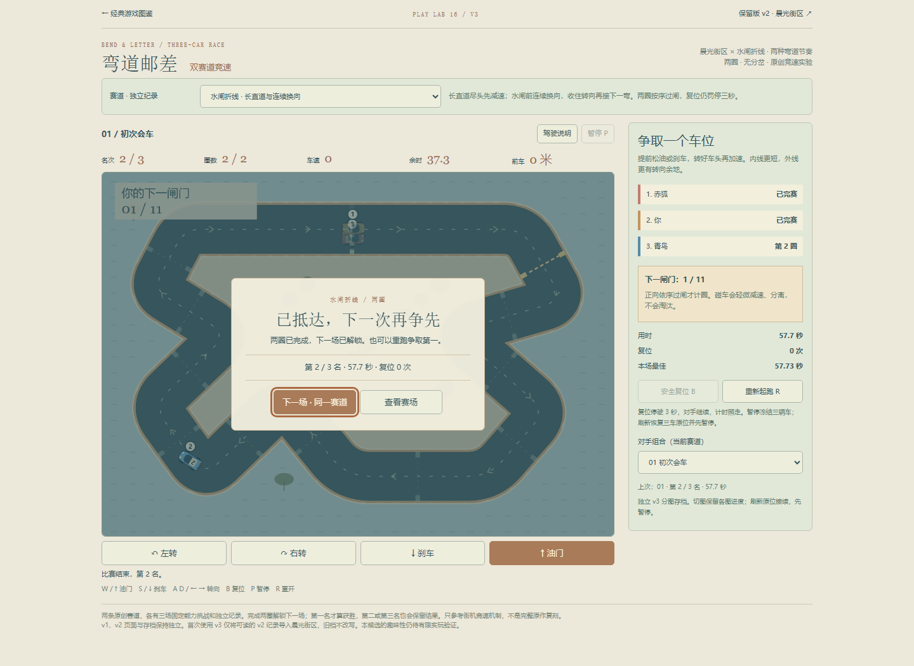
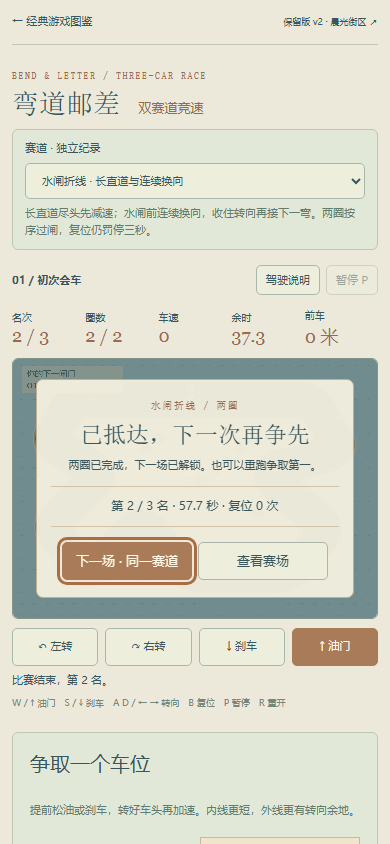
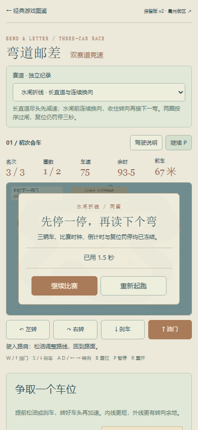

新增「水闸折线」，保留「晨光街区」及原 v2。长直道末端制动、连续反向弯与更窄路面形成不同驾驶决策；沿用两圈、95秒、三车与三个对手场次。两图独立纪录及续局，切图后接续先暂停。
本地 Chromium 147 普通键盘输入完成新图首场：24闸、57.73秒、第2名、零复位、单次结算。只读车辆数据与几何决定约50ms一次的数字WASD输入；未改位置、时间或胜负。合法完赛与第一名明确区分。旧图只做受影响短流程，没有重复历史完整通关。
普通界面验证两图选择、进行中三车精确刷新、下一场、重开、查看赛场/返回结算、分图最佳/上次结果/续局、390CSS与键盘返回大厅的筛选和焦点。触控使用浏览器原生CDP模拟：油门加转向、单指先放、移出后释放、取消、暂停恢复与返回；不是手机真机。
漏闸不记进度、旧档导入、坏档保全与写失败恢复属单独模型/存储fixture，不冒充自然游玩。原图同输入车辆与计时状态保持一致。候选模型已覆盖新图三个对手场次的合法线路，但不是三场普通UI胜利。
首轮脚本完成比赛后过早离开目录，留下单次fetch错误；保留记录。后续定位到未完成目录请求被导航取消，等待目录载入后的返回与触控检查无页面错误及HTTP错误，没有重刷整场。
核心浏览器证据 · 针对性模型/存储检查 · 单独浏览器存储故障注入 · 复用候选几何与对手模型证据 · 可重跑检查。人手驾驶乐趣、难度感受、真实设备触控和性能仍待验收。



